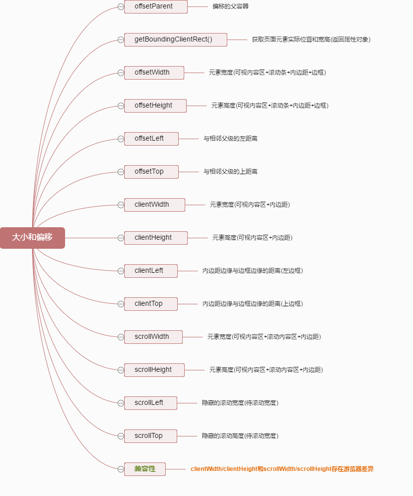
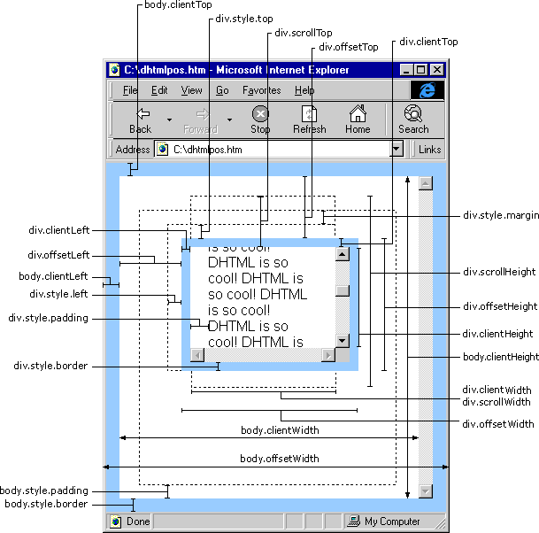
一、JS宽高属性
1.window相关
| 属性 | 说明 |
|---|---|
| window.innerHeight | 浏览器窗口高度，如果存在水平滚动条，则包括滚动条（不包括标题、工具栏、状态栏） |
| window.innerWidth | 浏览器窗口宽度，如果存在垂直滚动条，则包括滚动条（不包括标题、工具栏、状态栏） |
| window.outerHeight | 浏览器窗口整个高度，包括窗口标题、工具栏、状态栏等 |
| window.outerWidth | 浏览器窗口整个宽度，包括侧边栏，窗口镶边和调正窗口大小的边框 |
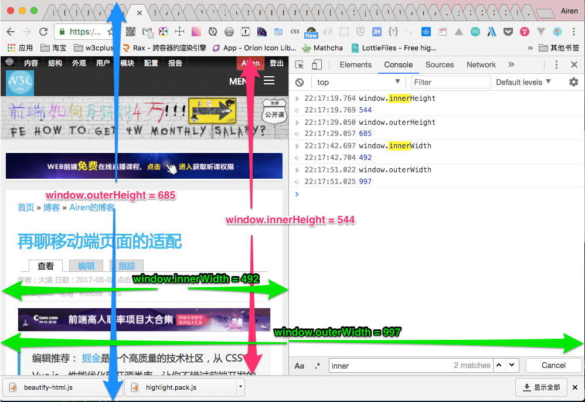
2.window.screen相关
| 属性 | 说明 |
|---|---|
| window.screen.width | 显示器屏幕的宽度（与分辨率有关） |
| window.screen.height | 显示器屏幕的高度（与分辨率有关） |
| window.screen.availHeight | 浏览器窗口在屏幕上可占用的垂直空间（桌面高度去掉任务栏高度） |
| window.screen.availWidth | 返回浏览器窗口可占用的水平宽度 |
| window.screenTop | 返回浏览器上边距离屏幕上边界的距离 |
| window.screenLeft | 返回浏览器左边距离屏幕左边界的距离 |
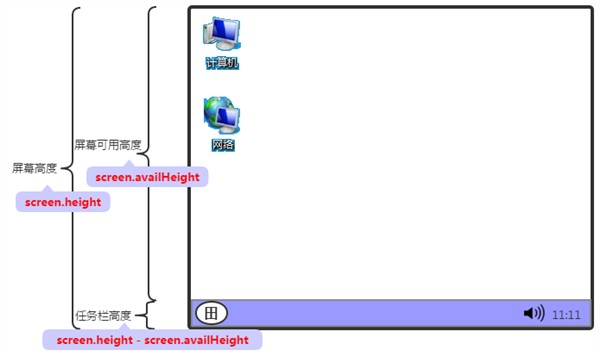
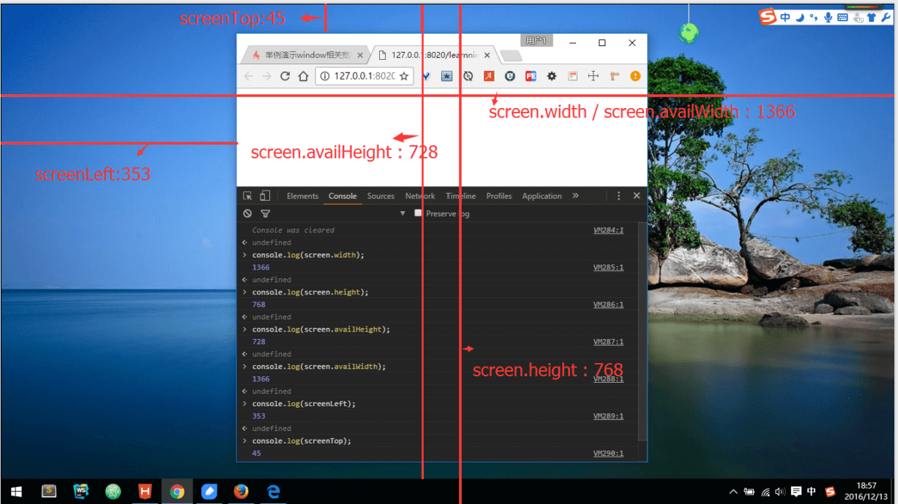
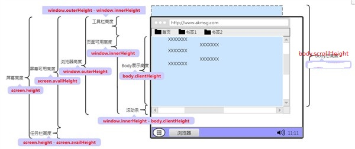
3.client相关
| 属性 | 说明 |
|---|---|
| clientHeight | 元素可视区域的高度，包含内边距，但不包括水平滚动条、边框和外边距 |
| clientWidth | 元素可视区域的宽度，包含内边距，但不包括垂直滚动条、边框和外边距 |
| clientTop | 元素顶部边框的宽度，等于border-top |
| clientLeft | 元素左边边框的宽度，等于border-left |
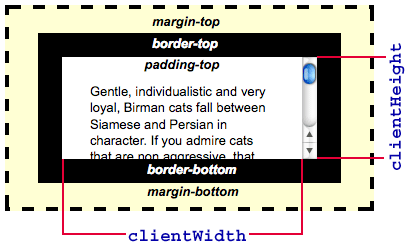
4.offset相关
| 属性 | 说明 |
|---|---|
| offsetParent | 返回一个指向最近的包含该元素的已定位元素。如果没有定位的元素，则 offsetParent 为最近的 table元素对象或根元素（标准模式下为 html；怪异模式下为 body）。当元素的 style.display设置为 none 或定位为fixed时，offsetParent 返回 null |
| offsetHeight | 在clientHeight的基础上， 加上边框和滚动条的高度 |
| offsetWidth | 在clientWidth的基础上， 加上边框和滚动条的高度 |
| offsetLeft | 当前元素到其offsetParent 节点的左边的距离 |
| offsetTop | 当前元素到其offsetParent 节点的上边的距离 |
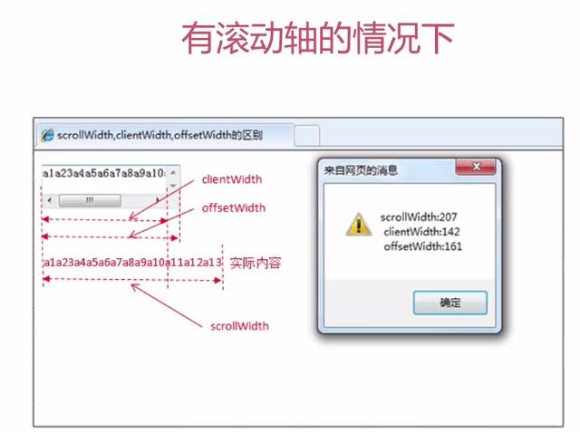
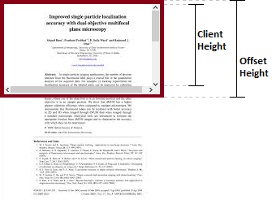
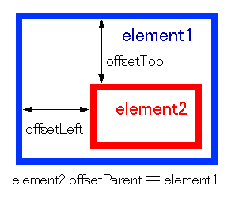
5.scroll相关
| 属性 | 说明 |
|---|---|
| scrollHeight | 元素完整的高度和内边距，这个高度包括肉眼看不见、溢出、被窗口遮挡的部分 |
| scrollWidth | 元素完整的宽度和内边距，这个宽度度包括肉眼看不见、溢出、被窗口遮挡的部分 |
| scrollTop | 元素的 scrollTop 值是这个元素的顶部到它的最顶部可见内容（的顶部）的距离的度量。当一个元素的内容没有产生垂直方向的滚动条，那么它的 scrollTop 值为0；获取元素若为body时，document.body.scrollTop == window.scrollY; |
| scrollLeft | 可以读取或设置元素滚动条到元素左边的距离，元素被卷起来的宽度；获取元素若为body时，document.body.scrollLeft == window.scrollX; |
| window.scrollX | 返回文档/页面水平方向滚动的像素值 |
| window.scrollY | 返回文档在垂直方向已滚动的像素值 |
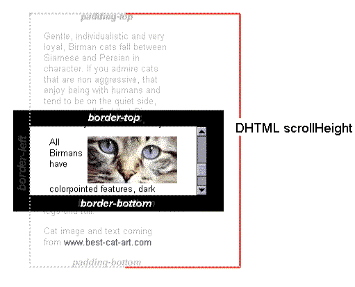
6.Event相关
| 属性 | 说明 |
|---|---|
| e.clientX/clientY | 相对于可视区域左上角的坐标 |
| e.pageX/pageY | 相对于整个文档（包括未显示区域）左上角的坐标 |
| e.screenX/screenY | 相对于屏幕左上角的坐标 |
| e.offsetX/offsetY | 相对于事件源（当前元素）左上角的坐标 |
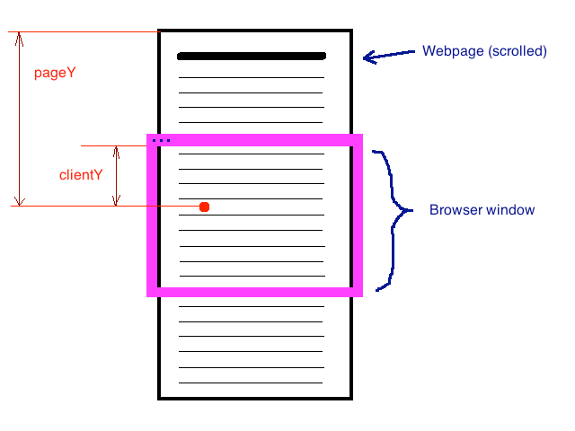
二、jQuery宽高属性
| 属性 | 说明 |
|---|---|
| width() | 元素的content区域宽度 |
| height() | 元素的content区域高度 |
| innerWidth() | 元素的content+padding区域宽度 |
| innerHeight() | 元素的content+padding区域高度 |
| outerWidth(Boolean) | 可选，默认表示元素的content+padding+border区域的宽度，如果为true表示元素的content+padding+border+margin区域的宽度 |
| outerHeight(Boolean) | 可选，默认表示元素的content+padding+border区域的高度，如果为true表示元素的content+padding+border+margin区域的高度 |
| scrollLeft() | 相对于水平滚动条左边的距离 |
| scrollTop() | 相对于垂直滚动条上边的距离 |
| offset() | 返回相对于document的当前坐标值，包含left、top值 |
| position() | 返回相对于offsetParent的当前坐标值，包含left、top值 |
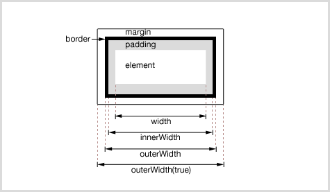
三、常用判断
1.判定元素是否滚动到底
如果元素滚动到底，下面等式返回true，没有则返回false：1
element.scrollHeight - element.scrollTop === element.clientHeight
2.offsetTop 与 style.top 的区别
(1) offsetTop 返回的是数字，而 style.top 返回的是字符串，除了数字外还带有单位：px
(2) offsetTop 只读，而 style.top 可读写
(3) 如果没有给 HTML 元素指定过 top 样式，则 style.top 返回的是空字符串
3.获取页面滚动条当前位置
1 | if (document.documentElement && document.documentElement.scrollTop) { |
4.获取页面可视范围高度
1 | if (document.body.clientHeight && document.documentElement.clientHeight) { |
5.获取页面完整高度
1 | Math.max(document.body.scrollHeight, document.documentElement.scrollHeight) |
6.获取滚动条宽度
1 | var scrollBarWidth = el.offsetWidth - el.clientWidth; |
7.页面滚动离开首屏(这时可显示回到顶部的按钮)
1 | document.body.scrollTop > window.innerHeight |
8.图片懒加载判断
1 | function lazyload() { |
参考链接：